本文主要是对《Learning-Based model predictive control: Toward Safe Learning in Control》文章中Section5中所引用的文章的笔记和理解，以及safe reinforcement learning一个简单的综述和分析。
介绍safe reinforcement learning不同的思路和方法（以2021TAC文章为例）
综述文章《Learning-based model predictive control: Toward Safe Learning in Control》，文中主要对三个方向进行阐述和介绍：1. learning the system dynamics 2. Learning the controller design 3. MPC for safe learning. 其中，前两个都是很常规的操作，对于第三个，结合当前很火的safe reinforcement learning，文中列举了几个工作。这篇文章主要是ETH的实验室的人做的工作，其引用了很多自己实验室的工作。
通常基于学习的控制算法，例如强化学习，已经在高维度的控制问题中取得了巨大进展，但是由于系统物理约束的存在，大部分的工作都不能保证安全性，尤其是在迭代学习的过程中，为了解决这个问题，2011年的一篇文章《Guaranteed safe online learning of a bounded system》提出了一个安全性框架，通过在必要的时候使用一个基于模型的控制器来进行控制，否则使用一个基于学习的控制器进行控制，来最优化损失函数。
MPC可以和《A predictive safety filter for learning-based control of constrained dynamical systems》中提出的safety filter结合，来将一个safety-critical动态系统变为一个安全系统，并且各种基于学习的控制器都可以直接结合使用。传统的MPC算法是同时考虑约束和cost function，也即一对tradeoff，尤其对于随机系统来说，约束满足的话，cost function可能高，约束不满足的话，cost function会降低，所以，需要对约束满足和cost function优化分开考虑，利用MPC算法来满足约束，利用基于学习的方法来优化performance。MPC控制器通常是对真正的随机最优控制问题的粗略近似。为了解决上述问题，可以考虑使用基于学习的控制器，例如随机策略搜索，和近似动态规划。
2011年：《Guaranteed safe online learning of a bounded system》
很多基于学习的控制方法，以强化学习为代表，取得了很大的进展，能够用于处理复杂且高维度的问题，但是这些方法大多数不能保证在物理条件限制下的安全限制，尤其是在学习迭代的过程中。为了解决这个问题，safety框架在控制理论中出现。即这篇文章，应该是最早的将safe-learning问题的文章。
机器学习方法被广泛用于自动机器人中，然而很多结果都只是通过精确性和收敛率来描述系统的性能，而很少有工作来分析其保证稳定性和鲁棒性的理论分析。因此，许多机器学习算法都被限制应用在对安全性要求不高的场景下。为了解决这个问题，可以使用reachability analysis，该技术可以用来计算状态空间的区域，也被称作可达集。在这个集合中的点，尽管受到扰动的作用，仍然可以保证其是安全的在未来的一段时间内。这篇文章展示了如何利用可达性分析来结合机器学习算法，应用到一个实际的场景中：一个飞行机器人尝试学习地面小车的动态系统，使用摄像头且视场有限。
所提出的算法使用Reachability analysis方法
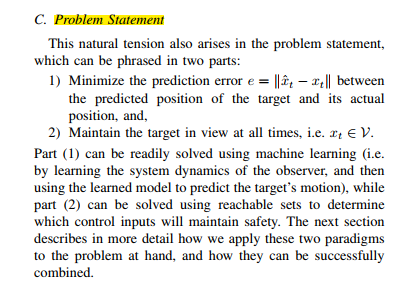
2017年：《Safe reinforcement learning via online shielding》
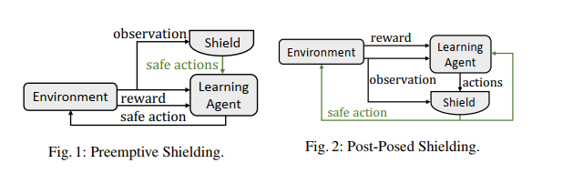
这篇文章提出了确保safety的两种模式，主要是根据shield作用的位置来进行区分，第一种是shield在learning agent计算控制量之前起作用，给出一个安全action的列表；第二种是在learning agent计算出控制量之后，验证该action是否是安全的，然后将不安全的action进行修正。
这篇文章对safe reinforcement learning的定义：在训练和执行的时候满足逻辑安全的条件下来学习一个最优控制器。
给出一个例子：
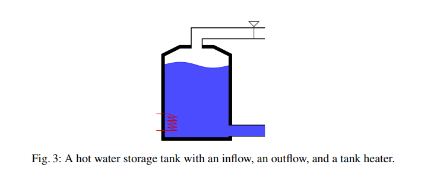
对于一个热水存储水箱，学习一个能量消耗高效的控制器，来保持水达到一个指定的温度以上。能量消耗和水位有着相关的关系，但是这个关系是未知的。水箱可以出水，可以进水，水箱的容积有一定限制，约束用逻辑化的表示可以表达为：
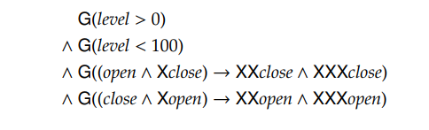
第一第二个约束是对水位的物理约束，第三个第四个约束阀门开了或关了以后，需要保持连续两个时间步长。
shield方法的构造主要还是通过形式化验证的方法。
2018年：《Safe exploration of nonlinear dynamical systems: a predictive safety filter for reinforcement learning》
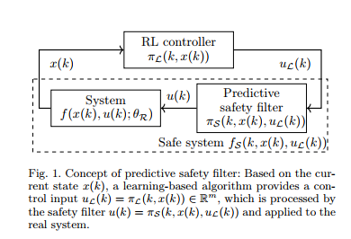
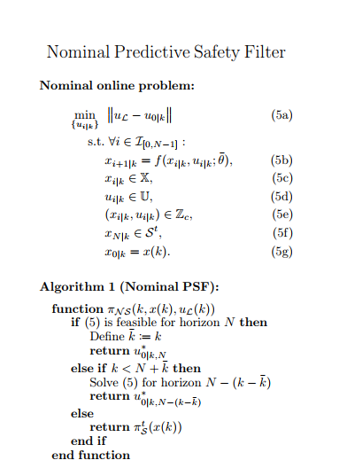
2018年：《An online approach to active set invariance 》
传统的保证系统安全的方法需要离线计算一个viable set，很难计算同时消耗资源大，这篇文章针对线性系统，结合MPC设计了一个最优backup策略，对安全的定义："a system being safe is commonly defined as this system never leaving the safety set."。
一个很自然的问题是“什么是最好的backup控制率”，这篇文章考虑的是使用MPC来对\(x_t\)以后的一段时域进行求最优控制率。
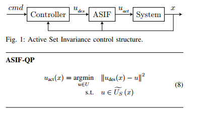
算法：对于给定的线性系统
1.根据系统动态，利用最优控制计算出一个ellipsoidal集合
2.利用MPC求解一个近似的最优化问题。
2019年：《Probabilistic model predictive safety certification for learning-based control》
这篇文章提出了一个probabilistic model predictive safety certification(PMPSC)，可以和任何RL算法进行结合，并且可以提供可证明的安全保证。稳定性的证明是通过一个stochastic tube来连接当前系统的状态和一个状态终端集，对于无界的扰动来说，一个形式可以允许递归可行解。通过设计了一个设计步骤，使用贝叶斯推理和最新的概率不变集和的成果。最后使用了一个数值车的例子的仿真来展示RL算法可以和文中提出的框架进行结合从而获得安全性的证明。
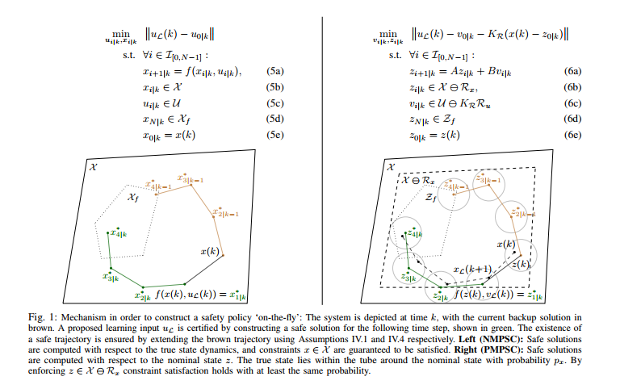
2021年：《A predictive safety filter for learning-based control of constrained nonlinear dynamical systems》
这篇文章提出了大多数RL算法不支持状态和输入约束的考虑，而该文提出了一种解决该问题的算法，利用一个预测安全滤波器，其可以将一个有约束的动态系统转化为一个无约束的安全系统，然后可以使用任何RL算法来进行求解。该预测滤波器输入一个控制输入同时基于当前的状态，决定该输入能否被安全用于实际系统中，否则，它必须进行一定的修正来满足安全性条件。安全性是通过连续更新安全策略来满足的，主要采用的是MPC算法来更新这个安全策略，使用一个数据驱动的系统模型，同时考虑状态和输入的独立的不确定性。
Learning-based MPC算法尝试将两者的优势结合起来，见2020年的那篇综述，然而，设计这样的算法很有挑战性，通常很保守，同时需要很多的专家知识，同时，该方法只能局限于model-based方法中。另外，在每一个时间步长中，都需要求解一个有限时域的最优控制问题来近似可能无限时域的控制问题。
概念：这篇文章提出了一个model predictive control的变种算法：predictive safety filter。其可将很非线性和安全要求高的动态系统转变为安全系统，然后应用任何RL算法进行应用，且不需要任何safety certificates。相比于MPC算法，PSF验证RL控制器的输出是否是安全的，否则，将其进行很小的修改来维持安全操作在未来的所有时刻。这意味着，PSF只需要保证系统是安全的，而并不需要利用特定的目标函数来控制它。然后问题就转变为了寻找一个安全滤波器，而不是寻找一个期望的控制器，对于寻找这样的控制器来说，需要考虑目标函数和约束，很复杂。
贡献：
- 本文针对系统动态是概率模型这一问题，从数据中推理出来的，这篇文章提出了一个predictive safety filter，构建在NMPC概念之上。主要方法是通过搜索safe backup trajectory，为了确保对将来所有时刻的安全性，对于backup trajectory的搜索过程允许修改RL的输入。由于MPC的效果往往比一些非优化的算法好，例如基于Lyapunov函数或者滑膜控制器在线解决一个近似最优控制问题。
- PSF算法提供了一个隐含的状态和输入对的表示，近似估计其最大的容许控制集合和输入集合，使用有限时域的MPC方法。
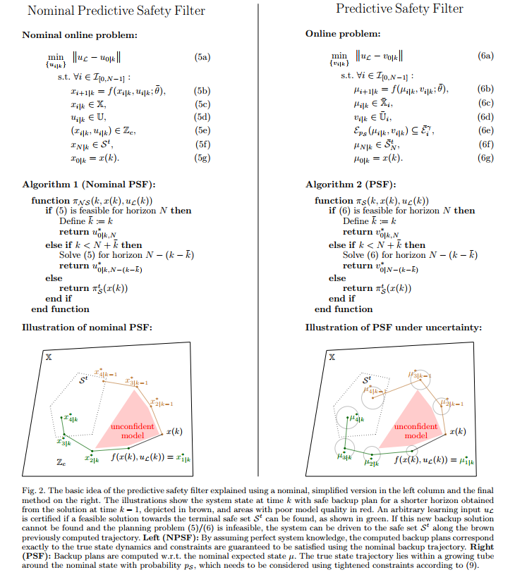
介绍仿真环境（所研究的问题），确定自己需要研究的问题
找研究方向最重要的就是找到需要研究的对象，经过对很多篇文章的阅读，整理一下他们使用的仿真环境及系统表达
2011年Jeremy的一篇会议《Guaranteed safe online learning of a bounded system》
这篇文章考虑的是一个无人机和一个地面小车的问题，使用一个无人机来跟踪一个地面的目标。
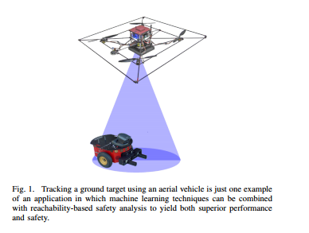
无人机可以看作是一个观测器，观测器的采样间隔固定
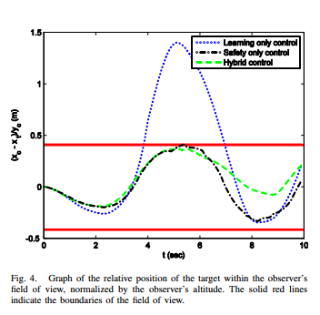
地面小车的系统动态未知，通过控制天上观测器来跟踪地面小车的动态，同时，保证地面小车始终在观测器的视场范围内。
2013年发表在CDC上的《A probabilistic approach to model predictive control》：
该文章考虑的是一个双积分器，表示一个质点在一个二维平面上的运动轨迹，是一个线性系统，同时考虑随机扰动，该系统的状态有4维，其中，\(x_1\)， \(x_2\)分别表示系统在二维平面上的\(x, y\)坐标，控制系统的目标是将系统的状态控制到平衡点，也就是\((0, 0)\)附近。
同时考虑系统的约束，状态约束和输入约束
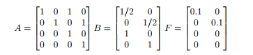
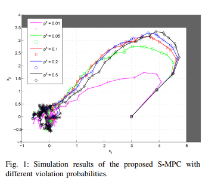
2018年谷歌发在arxiv上的《A lyapunov-based approach to safe reinforcement learning》
这篇文章仿真的是一个stochastic 2D grid-world motion planning problem。 一个智能体（机器人小车）从一个安全区域出发，同时它的目标是到达一个给定的目标地点。在每一个时刻，智能体可以向四个不同的方向进行移动，由于传感器和控制器的噪声，会存在一个概率，随机的向一个邻居的状态进行移动。考虑到燃料消耗，每一个阶段所消耗的燃料都是为1，到达目标地点的回报是1000。因此，我们想让智能体尽可能在短步骤就能到达目标地点。在初始点到目标点的路程中，有一定数量的障碍物，由于安全的限制，智能体无法通过，因此，智能体的目标是以最可能段的时间到达目标点，同时遇到障碍的次数不超过一个特定的数值。
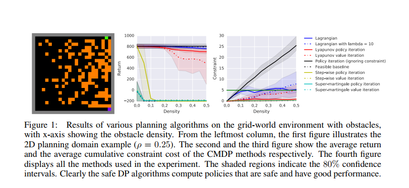
使用一个25x25大小的grid-world，其中一共有625个状态。
2018年CDC《An online approach to active set invariance》
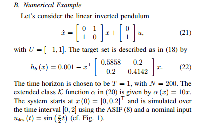
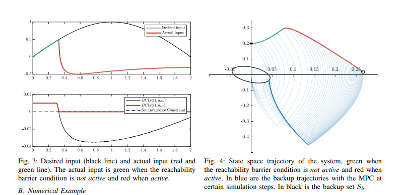
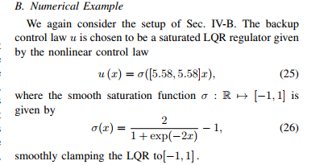
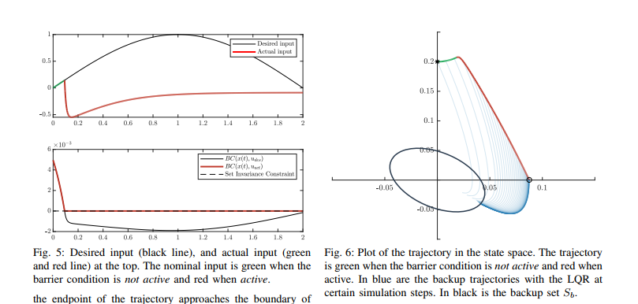
2021年发表在TAC上的《Probabilistic model predictive safety certification for learning-base control》
这篇文章考虑的是一个自动驾驶场景，将一个自动驾驶的车跟踪的一个给定的轨迹，同时，考虑道路的约束，也就是系统状态的约束，系统动态可以表示为：
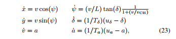
考虑系统输入的约束，
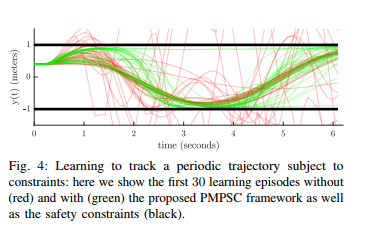
2021年发表在arxiv上的《A predictive safety filter for learning-based control of constrained nonlinear dynamical systems》
这篇文章第一个仿真例子考虑的是传统控制问题swinging up 一个倒立摆，从一个向下的起始位置，考虑输入的约束，同时为了安全的限制，需要将向上位置的角度限制在一定的范围内。其transition模型是通过线性贝叶斯回归来获得的。考虑高斯测量噪声，
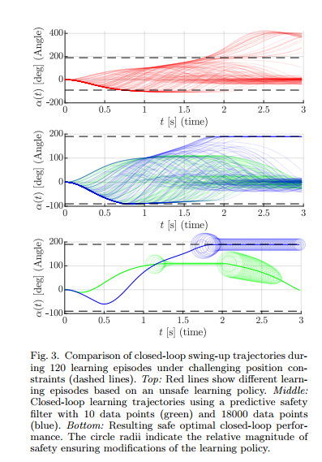
第二个数值仿真例子是AscTec Hummingbrid drone，无人机环境，使用Bullet Physics SDK进行仿真，
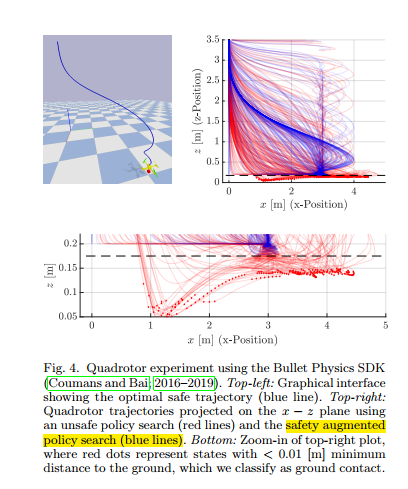
使用一个两层的控制结构进行控制，底层是采用PD控制器，顶层采用提出的控制器进行控制，其状态是10维的，输入是3维的，同时考虑其高度和速度位置的约束。
最终的控制目标是将无人机从一个给定的初始位置控制到降落位置，是一个三维坐标给定点。使用贝叶斯回归方法，同时基于高斯先验知识及高斯噪声。
Wabersich 2018年发表在CDC上的文章《Linear model predictive safety certification for learning-based control》
这篇文章考虑的是一个简单的控制问题，其中，系统动态部分未知，并通过数据的方法得到了一个存在误差的近似模型，使用该近似模型和LQR设计方法，最终的控制目标是将系统的状态控制到。
\(x(k+1)=\left(\begin{array}{cc} 1 & 0.1 \\ -0.23 & 0.78 \end{array}\right) x(k)+\left(\begin{array}{c} 0 \\ 0.1 \end{array}\right) u(k)+w(k)\)
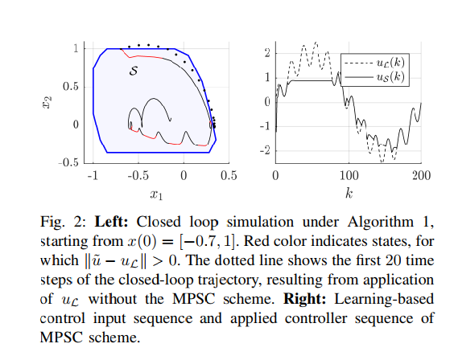
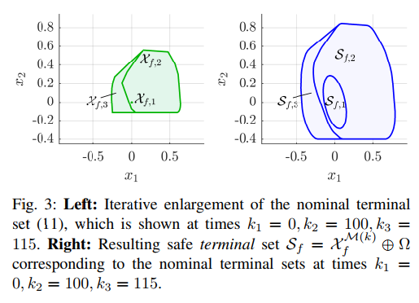
Yang Yongliang2020年发表在Neural networks and learning systems上的文章《Safe Intermittent Reinforcement learning with static and dynamic event generators》
\(\dot{x}=\left[\begin{array}{c} x_{2} \\ -x_{1}+0.5\left(1-x_{2}^{2}\right) x_{2} \end{array}\right]+\left[\begin{array}{c} 0 \\ x_{1} \end{array}\right] u, \quad t \geq 0\)
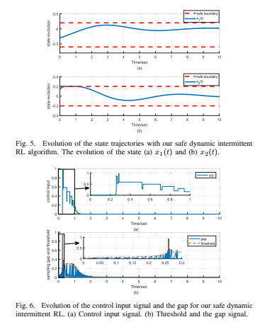
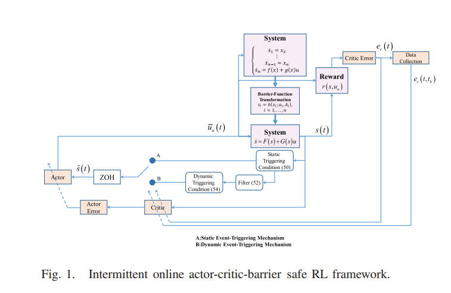